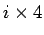
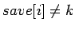

จากชุดคำสั่งของภาษา C
while (save[i] == k) i += 1;
สมมุติให้ตัวแปร i และ k อยู่ในรีจีสเตอร์ $s3 และ $s5 ตามลำดับ ตำแหน่งเริ่มต้นของอาเรย์ save อยู่ในรีจีสเตอร $s6 จงเขียนภาษาแอสแซมบลีของ MIPS สำหรับชุดคำสั่ง while
ในขั้นแรกเราเริ่มจากการโหลดค่า save[i] จากหน่วยความจำมาเก็บไว้ในรีจีสเตอร์ การที่จะโหลดค่า save[i] นั้นจะต้องมีแอดเดรสของ save[i] ที่มีค่าเท่ากับ  บวกกับค่าเริ่มต้นของอาเรย์ save ที่อยู่ในรีจีสเตอร์ $s6 เนื่องจาก MIPS สามารถเข้าถึงข้อมูลน้อยที่สุดได้ในระดับไบท์ ค่าของแอดเดรสจึงชี้ที่ 1 ไบท์ การเข้าถึงหนึ่ง Word จึงจำเป็นต้องคูณด้วย 4 จากที่ค่าสี่เป็นค่ายกกำลังของสองเราจึงสามารถทำการคูณโดยทำการเลื่อนบิตจากคำสั่ง sll เป็นค่าเท่ากับสองบิต และเพิ่มเครื่องหมาย Loop เพื่อกำหนดตำแหน่งการทำซ้ำ
Loop: sll $t1, $s3, 2 # Temp reg $t1 = 4 * i
เพื่อให้ได้ตำแหน่งหรือแอดเดรสของ save[i] เราจะต้องทำการบวกค่า $t1 กับค่าเริ่มต้นของอาเรย์ $s6
add $t1, $t1, $s6 # $t1 = address of save[i]
จากนั้นเราจะทำการโหลดค่าที่อยู่ในแอดเดรส save[i] เข้ามาในรีจีสเตอร์ $t0
lw $t0, 0($t1) # Temp reg \$t0 = save[i]
คำสั่งต่อมาเป็นคำสั่งที่ทำการทดสอบลูป โดยจะออกจากลูปเมื่อ 
bne $t0, $s5, Exit # go to Exit if save[i] != k
คำสั่งต่อมาคือการเพื่มค่า i = i + 1
addi $s3, $s3, 1 # i = i + 1
และ jump j กลับไปที่ Loop ออกจากลูปโดยการเพิ่มเครื่องหมาย Exit ก็เป็นการเสร็จสิ้น
j Loop # go to Loop
Exit:
จากตัวอย่างขั้นต้นนำมาสู่สิ่งที่เรียกว่า Basic Block หมายถึงชุดของคำสั่งที่ไม่มีคำสั่ง branch หรือ jump อยู่ระหว่างกลาง นอกจากตรงจุดเริ่มต้น หรือจุดสิ้นสุดเท่านั้น
นอกจากคำสั่ง branch จากการทดสอบความเท่ากัน (beq) และไม่เท่ากัน (bne) แล้ว ชุคคำสั่งของ MIPS ยังมีคำสั่งสำหรับทดสอบค่าน้อยกว่า คำสั่งดังกล่าวคือคำสั่ง slt และ slti หรือเรียกว่า set on less than ตัวอย่างเช่น
slt $t0, $s3, $s4
ค่าของ $t0 จะเท่ากับ 1 ถ้าค่าในรีจีสเตอร์ $s3 น้อยกว่า ค่าในรีจีสเตอร์ $s4 ถ้าต่างจากนี้ ค่าในรีจีสเตอร์ $t0 จะเท่ากับ 0
การเปรียบเทียบกับค่าคงที่มีการใช้งานเป็นอย่างมากเช่นเดียวกัน ในการเปรียบเทียบกับค่า 0 เราสามารถเปรียบเทียบกับค่า $zero ได้ ในกรณีที่เปรียบเทียบกับค่าอื่น สามารถใชัคำสั่งดังต่อไปนี้
slti $t0, $s2, 10
ค่าของ $t0 จะเท่ากับ 1 ถ้าค่าในรีจีสเตอร์ $s2 น้อยกว่า 10 ถ้าต่างจากนี้ ค่าในรีจีสเตอร์ $t0 จะเท่ากับ 0
ในชุดคำสั่งของ MIPS นั้น ไม่มีคำสั่ง branch on less than เนื่องจากมีความซับซ้อนสูงเกินไป การทำงานโดยใช้สองคำสั่งเรียงต่อกันจะสามารถทำงานได้เร็วกว่า
สำหรับการทำ case/switch เราสามารถใช้ jump address table โดยระบุค่าของตำแหน่งแอดเดรสของ branch ต่างๆ ให้อยู่ในตาราง และเลือกตำแหน่งการ jump จากตารางนั้นๆ